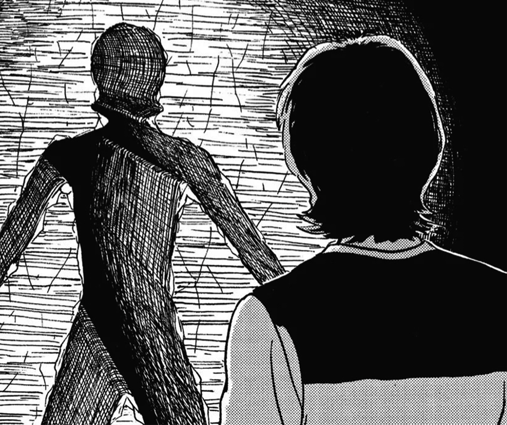

The Enigma of Amigara Fault |

You have another nightmare that night. You dream that you are a criminal and your punishment is to enter the hole specifically carved for you. Terrified, you wake up in cold sweat only to find Yoshida gone. You go to the her hole to find that she has dug out the stones and gone in.
While mourning the loss of Yoshida, your flashlight falls and lands right in front of another hole. Upon closer inspection, you see that it is none other than your hole. You...